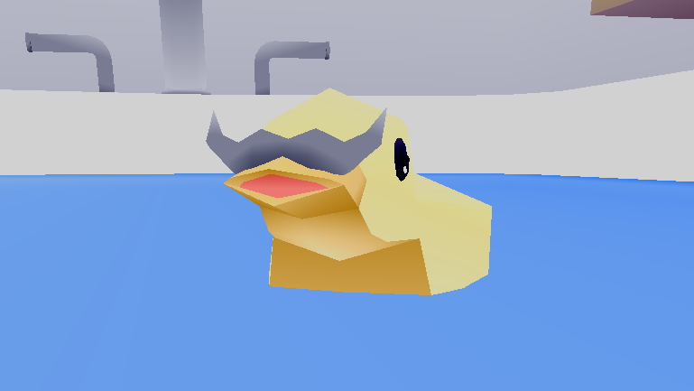

Game Design Portfolio
Ducky Clicker
Plattforms: Android, Web | State: In Development | Development Time: 1.5 months
Mech Spa
Plattforms: PC (Steam) | State: Released | Development Time: 2 years
Project Nahual
Plattforms: PC | State: Released | Development Time: 1 month
Game Testing Portfolio
Bug Report Case - Source of MadnessGameplay Bug - Big enemy gets stuck inside map geometry
When the player has an active Cold Guardian and a big enemy becomes frozen at the start area of Cave of Lost Souls, enemy gets stuck between the top of the cave. It only returns to ground while getting frozen again.
Severity rankings: 1= crashes 2=game stoping bugs 3=all other bugs
Severity: 3
At the start of the Cave of Lost Souls biome, if you have equipped Cold Hold III or have a Cold Guardian active it's possible to make a big enemy get stuck inside the initial area if the freeze projectile hits it.
Actual Results: The enemy flies and gets stuck at the top of the cave tile. It continues to shoot projectiles or attack, but becomes unreachable until Cold Guardian frozes enemy again.
Expected results: The enemy physics should let enemy fall to ground and continue attacking player.
Repro: 1/5